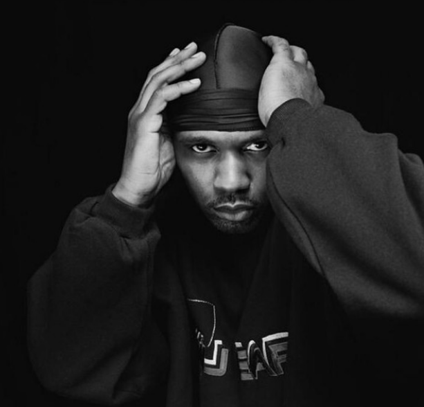

Jamel Irief, or Masta Killa, was the last member to join Wu-Tang. Irief was only featured on one song on Wu-Tang’s debut album, and his verse was close to being cut in favor of a feature by Killah Priest. However, his verse was so fine-tuned and technically complex that he fit perfectly with the other members of the group.
Since then, Masta Killa has been an integral part of Wu Tang’s brand and releases. His lyricism and flow have also grown since his first verse under the mentorship of fellow member GZA. He has since released multiple solo projects, with his second, Made in Brooklyn, being produced by famous names such as Pete Rock and MF DOOM.